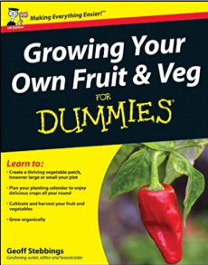

Onions can be roasted, grilled, pickled, caramelized, battered and deep-fried, sliced thinly or chopped and served raw in salads, sandwiches, dips, or as a garnish for tacos, making them among the most versatile ingredients to use in cooking. If you want to grow them in your garden.
Check out the recipes section
Onions are such a versatile vegetable – they feature in so many recipes, and growing your own means you’ll always have them to hand. They are easy to grow from baby onions, which are called sets. Although seed is available, sets are the easiest and quickest way to grow onions.
Water if the weather is dry and give an occasional feed with a general liquid fertiliser. A light feed of sulphate of potash in June will help ripen the bulbs ready for storage. Stop watering and feeding once the onions have swollen in mid summer.
Hand weed regularly.
Remove any flower spikes as soon as you see them.

Growing Your Own Fruit and Veg For Dummies
Onions need a sunny, sheltered site with fertile, well-drained soil. Onions do not thrive on acid soils (below pH 6.5).
Before planting improve the soil with a bucket of garden compost or well-rotted manure for every square metre (yard) and add 35g per sq m (1oz per sq yd) of general purpose fertiliser such as Growmore.
Plant onion sets (immature onions) 5-10cm (2-4in) apart in rows 25-30cm (10-12in) apart from mid-March to mid-April. Gently push the sets into soft, well-worked soil so that the tip is just showing, and firm the soil around them.
Birds can be a problem lifting the new sets, so cover with fleece until the roots are established.
Onions are best suited for growing in the open ground, but you could grow a short row or two in large, deep containers or raised beds. They are not suitable for growbags.
Onions can be harvested when the foliage starts to turn yellow and topple over. For spring planted sets this will be in late summer to early autumn. Although it’s sometimes suggested to bend over the foliage or gently lift the bulbs to break the roots, this is no longer recommended.
Instead lift the bulbs before the foliage completely dies down. Place the lifted bulbs on a rack in full sun outdoors or a well-ventilated greenhouse for about two weeks to ripen. When the foliage is dry and papery, undamaged bulbs can be stored in a light, cool, dry place until needed.
Check out these videos on Youtube GrowVeg.com
A good place to shop is Amazon. They provide a good service in my experience, check out the link below if you need anything.
Copyright © Phil Lacey 2020